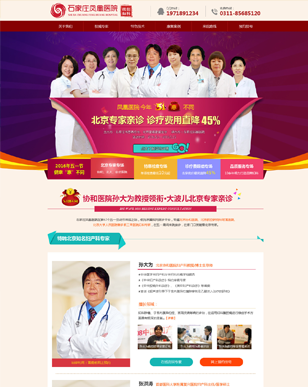

LEARN MORE
ABOUT ME
PERSISTENT LEARNING IS THE SOURCE OF DESIGN
4年的平面设计，2年的网页UI设计，让我对色彩和美的把握能力很强，擅长要求复杂，色彩纯度高的设计，对设计有近乎狂热的喜欢。
参与策划设计过四版移动端平台，重视用户体验，能积极与开发沟通，推进界面及交互设计的最终实现，
根据各种相关软件的用户群，提出构思新颖、有高度吸引力的创意设计。
精通HTML，CSS，CSS3，熟练前端框架JQUERY，完成页面特效并兼容主流浏览器。
-
基础信息
任红波/男/1985年
籍贯：河南/长垣
现居：北京/朝阳 -
求职意向
网页设计
UI设计
WEB前端 -
联系方式
TEL：15981927667
QQ：501753304
http://my.68design.net/173047
MY SKILLS
PERSISTENT LEARNING IS THE SOURCE OF DESIGN
经过多年工作中的磨炼，掌握主流UI设计软件PS、AI、CDR等
熟练掌握WEB前端常用软件HTML、JS、JQ、CSS3等
PS
photoshop
AI
illustrator
DW
dreamweaver
CDR
coreldraw
HTML
div+css
JS
javascript
JQ
jquery
WORK EXPERIENCE
PERSISTENT LEARNING IS THE SOURCE OF DESIGN
3年的平面设计，3年的网页UI设计，让我对色彩和美的把握能力很强，擅长要求复杂，
色彩纯度高的设计，对设计有近乎狂热的喜欢。
-
2009/02 - 2011/03
平面设计师
福布斯传媒有限公司
工作描述：任职期间，主要负责公司的画册设计， 单页，折页，公司形象，广告会展等广告设计与 创意，自学能力强，专业技能得到了很大的锻炼 和提高，我慢慢爱上设计这个行业。
-
2011/05 - 2013/09
网页设计/美工
郑州通街广告有限公司
工作描述：任职期间，作为公司的主创设计师，负 责公司客户的各种平面广告，包括单页、画册、吊 旗、折页等公司宣传品，作为首席设计师，参与客 户每一次活动的策划与创意制作，均取得了客户及 领导的认可。
-
2013/11 - 2015/03
网页设计/WEB前端
佳豪科技有限公司
工作描述：任职期间，我慢慢接触了网页设计， 很好地把自己的色彩感和创意与网页设计相融合， 保质保量地完成公司交给的大小任务，做各类网站 的每个页面效果图，专题页效果图，测重设计。 并利用业余时间自学了div+css和js，感叹于前端知 识的博大精深，我会继续努力，加强自己的各方面专业知识。
-
2015/04 – 2016/11
UI设计/WEB前端
北京华夏天工网络技术有限公司
工作描述：公司致力于为大中型医疗机构提供网络整 合营销、网络品牌传播、网络广告策划、网络公关、 等各项服务，任职期间，负责公司的PC专题页面、外 推图片等的设计。得到领导和客户的高度认可，也让 自己对色彩、视觉和设计有了更深层次的认识。
MY WORKS
PERSISTENT LEARNING IS THE SOURCE OF DESIGN
教育类专题
- 
医疗类活动专题
融大教育专题
MY WORKS
PERSISTENT LEARNING IS THE SOURCE OF DESIGN
手机端页面
平安方舟首页
金融手机APP欢迎页
投资类网站首页
UI小图标

教育类专题
响应式首页设计
社区类手机APP欢迎页
CONTACT ME
PERSISTENT LEARNING IS THE SOURCE OF DESIGN
TEL：15981927667 | QQ：501753304 | 个人主页：http://my.68design.net/173047
持之以恒的学习是设计的来源
责任感是设计的原则
而灵感是设计的升华
Persistent learning is the source of design
Responsibility is the principle of design
The inspiration is the sublimation of the design